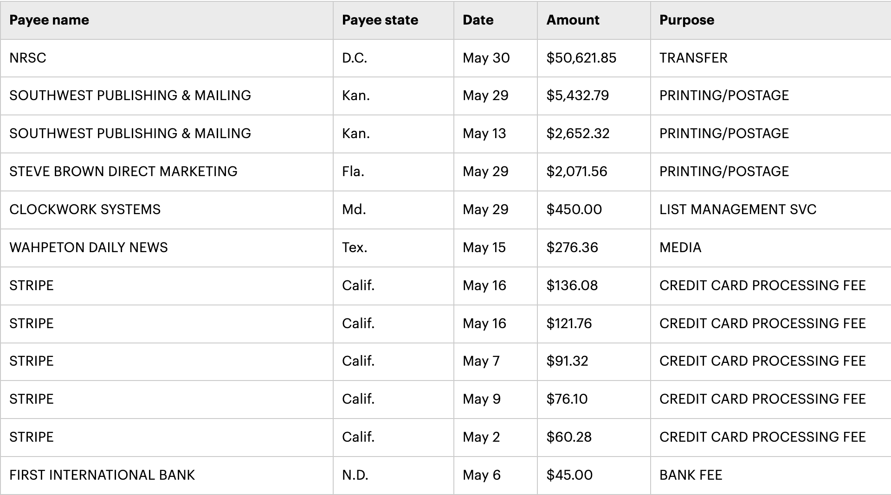
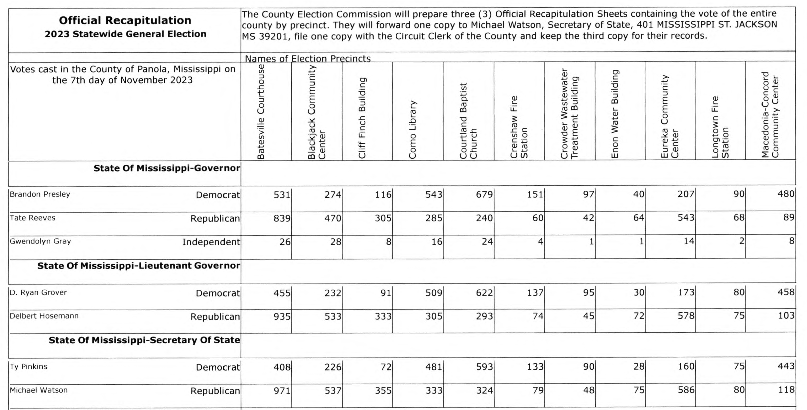
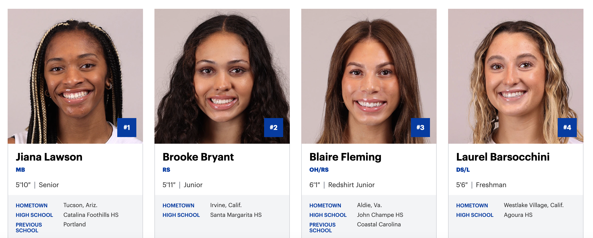
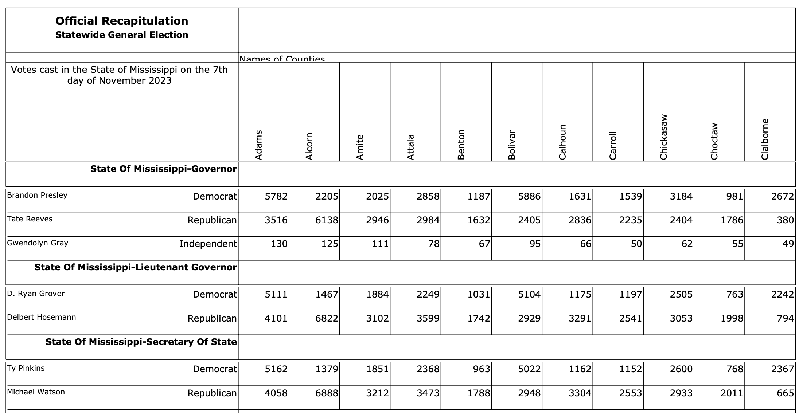
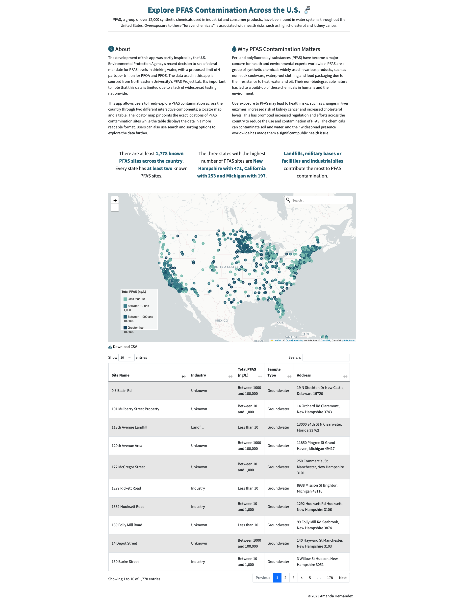
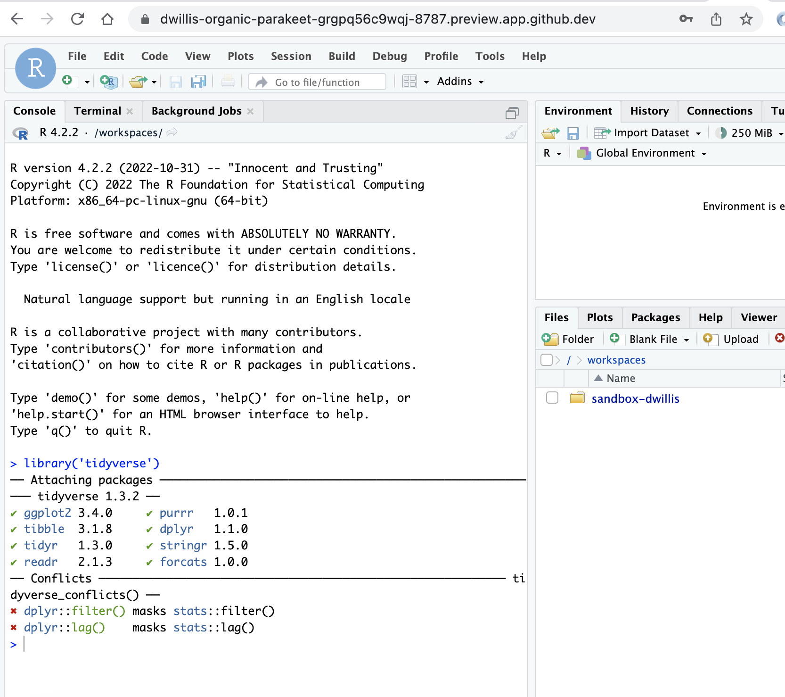
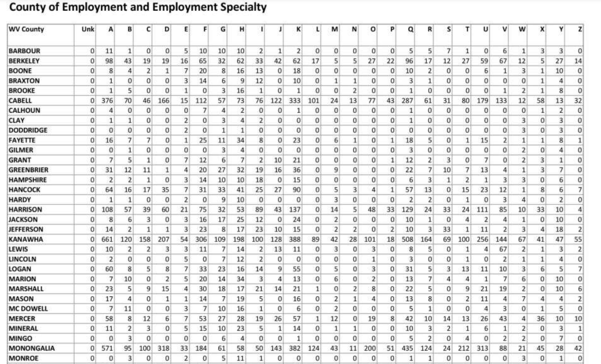

Derek Willis
Blog
About
Now
Then
Ways I Can Help
The Fix
Blog
Teaching
LLM Extraction Challenge: Fundraising Emails
What kind of sicko signs up for political fundraising emails from just about every committee? Oh, right, that’s me.
Jan 27, 2025
Derek Willis
The A in AI Stands for Archives
The following is based on a talk I gave at American University on Oct. 25, 2024.
Dec 9, 2024
Derek Willis
All Foreign Gifts Around Us
Whenever American federal officials - from the President to members of Congress and executive branch employees - meet with foreign government representatives, they often are…
Jun 22, 2024
Derek Willis

Why I Mostly Don’t Use AI for Campaign Finance … Yet
If there’s anything that I’ve developed an expertise in in the past 25 years, it’s campaign finance data. And if there’s anything I’ve been really into during the past year…
Jun 20, 2024
Derek Willis
Lessons from Teaching a Journalism Class on AI
I called it my “running with scissors” class, because after I offered to teach a course on using artificial intelligence for journalism, the thought dawned on me that I had…
Jun 3, 2024
Derek Willis

A Better Way to Process Mississippi Precinct Results
When it comes to turning official precinct election results into data, there are few states like Mississippi.
Jan 27, 2024
Derek Willis

Introducing Women’s College Volleyball Roster Data
Last year some students of mine at Maryland and I worked to produce a comprehensive set of data on women’s college basketball rosters, and while that process involved a lot…
Dec 25, 2023
Derek Willis

Using AI to Parse Election Results
If there’s one state that justifies the need for OpenElections, it’s Mississippi. Unlike some other states that don’t have a centralized election results system, Mississippi…
Nov 25, 2023
Derek Willis
West Virginia High School Football Blowouts
It has been a long time since I covered high school football in any way. The previous century, in fact.
Nov 13, 2023
Derek Willis
How Newsrooms Should be Talking About AI
If you’ve heard about news organizations using AI, chances are you’ve heard about some bad choices. Maybe it was CNET publishing AI-written stories with “very dumb errors”…
Nov 6, 2023
Derek Willis
What Was That?
If you were at Secu stadium on Oct. 14 for the Maryland-Illinois game and saw the Terrapins run the ball on third and six from the Illinois 29-yard line late in the game…
Oct 17, 2023
Derek Willis

Teaching News Apps with Codespaces - The Results
Turns out removing barriers works
May 27, 2023
Derek Willis

Teaching News Apps with Codespaces
How to spend less time on setup and level the playing field
Mar 22, 2023
Derek Willis
Teaching Journalism with ChatGPT
Why I want students to enagage with AI services
Feb 11, 2023
Derek Willis

What is Happening in Morgantown?
How WVU, GitHub Actions & Datasette Produce Good Questions
Jan 4, 2023
Derek Willis
Welcome Back
A new beginning, but not entirely.
Dec 31, 2022
Derek Willis
The More Important Problem
The first indication that I did not approach this NICAR-L improvement project in the right way should have been when I posted on GitHub a CSV file with metadata from 16…
Mar 9, 2019
Derek Willis
The NICAR-L Improvement Project
If you’re coming to the 2019 CAR Conference in March, chances are you’re a member of the NICAR-L listserv. The only session idea I pitched this year was on how to make the…
Feb 24, 2019
Derek Willis
The Best Training
I’ve been asked by students what the best training is to be a journalist. My position on this is very clear: waiting tables at a honeymoon resort is the best training.
Apr 4, 2018
Derek Willis
Academy Fight Song, Part 2
It begins, as so many things do these days, with a tweet.
Dec 28, 2017
Derek Willis
Government and Civic Tech
Looking at what has happened to civic technology organizations at the national level lately, you could get the impression that the federal government, having absorbed some…
Sep 29, 2016
Derek Willis
My Favorite Things
As first reported on the tweets, I have a new job, at ProPublica, where I’ll be working on news applications, investigations and other incredible stuff with the News Apps team…
Jul 29, 2015
Derek Willis
Civic Data and Journalism
A solid foundation of publicly available, consistent civic data - think of election results, voting information and other political records - is more important than ever for…
Jun 6, 2015
Derek Willis
We’re All Publishers Now
Last weekend I had myself a proper Twitter rant.
Nov 17, 2014
Derek Willis
Lightning Strikes
On November 19, 2009, Jaimi Dowdell of Investigative Reporters & Editors sent an email to more than a dozen of us asking about some ideas for advanced sessions for the 2010…
Jul 8, 2014
Derek Willis
How It Starts
Tomorrow is Aron Pilhofer’s last day at The New York Times.
May 22, 2014
Derek Willis
Data Journalism, Student Media Edition
I had the privilege of speaking to students (and some faculty) at Duke University on Monday, and it was inspiring to see so many people come out to listen to a very geeky…
Oct 9, 2013
Derek Willis
The Natives Aren’t Restless Enough
A couple of points to start with, in the hopes of not wasting readers’ time and preparing for some reactions:
Oct 1, 2013
Derek Willis
Teaching Hospitals, Journalism Education and a Hatchet Job
Donica Mensing and David Ryfe from the Reynolds School of Journalism at the University of Nevada, Reno, have published a paper that attempts to argue that recent attempts by…
Aug 22, 2013
Derek Willis
Why Develop in the Newsroom?
Nearly a decade ago, I sat with a group of Python developers around a table at a Vietnamese restaurant in Washington, D.C.’s Cleveland Park neighborhood and told them what…
Jul 16, 2013
Derek Willis
What Good is Dat?
Max Ogden, a one-man band of interesting civic (and other) coding, has a new project called
dat
.
Dat
is “a new initiative that seeks to increase the traction of the open…
Jul 2, 2013
Derek Willis
Lessons from ‘Data-Crunched Democracy’
Last Friday I traveled to Philadelphia for Data-Crunched Democracy, a conference drawing together political consultants, data analysis and targeting professionals, academics…
Jun 4, 2013
Derek Willis
What They Say About Us
As journalism buzzwords go these days, analytics has a lot going for it. The term is broad enough to encompass a wide range of ideas, ranging from the “dark side” where the…
May 21, 2013
Derek Willis
Academy Fight Song
What’s that I hear
The sound of marching feet
It has a strange allure
Has a strange allure
Mission of Burma, “Academy Fight Song”
Apr 28, 2013
Derek Willis
The Itemizer
Here’s a little secret about me: I love campaign finance data.
Apr 24, 2013
Derek Willis
Steve Coll
I have a ton of respect for Steve Coll, who was named dean of the Columbia Journalism School on Monday. He was the managing editor of The Washington Post when I started…
Mar 18, 2013
Derek Willis
Mobile Apps - Where the data lives
At first glance, I wasn’t sure how useful a mobile app for presidential documents would be. After all, it’s not too often that I am on the go and need to see the contents of…
Mar 2, 2013
Derek Willis
Magic Removal
Few may remember this, but Aaron Swartz kickstarted Django’s magic-removal effort years ago. Django is 1000x better thanks to his feedback. — Adrian Holovaty (
@adrianholovaty
…
Jan 23, 2013
Derek Willis
On Aaron Swartz
After trading some emails with Aaron Swartz in 2004 and 2005 about building a congressional votes database, I began to entertain a ridiculous fantasy: maybe, just maybe, I…
Jan 13, 2013
Derek Willis
The Data-Driven Congressional Reporter
Washington is full of reporters who excel at finding and building sources, or at knowing which documents to look for and when. Those are skills that take time to develop and…
Dec 26, 2012
Derek Willis
On Vengeance
I was 23 years old when I saw someone die, and my first thought about it is that I don’t recommend the experience.
Dec 15, 2012
Derek Willis
Thoughts on NewsFoo
In NewsFoo style, a brief introduction to this post:
Dec 3, 2012
Derek Willis
How I Got Here
I meant to finish this by Thanksgiving, as a way of acknowledging the key role that female mentors have played in my career. Better late than never.
Nov 27, 2012
Derek Willis
What I’ve Been Up To Lately
A link dump of election-related work that I’ve contributed to as part of The New York Times’ coverage of the final months of the campaign. In every instance these involved…
Nov 9, 2012
Congressional Data on GitHub - A Way Forward
Two years ago, there was a round of blog posts touched off by Clay Johnson that asked, “Why shouldn’t there be a GitHub for data?” My own view at the time was that…
Oct 15, 2012
Derek Willis
Share Your Knowledge
Unlike my friends at The Chicago Tribune, I have no logo to display, but my message here is as important as “Show Your Work”: Share Your Knowledge. In fact, it’s hard to do…
Aug 3, 2012
Derek Willis
Finding New Money
My colleague Raymond Hernandez has a story about an unusual aspect of New York Democratic congressman Charlie Rangel’s fundraising: after years of raising millions to help…
May 28, 2012
Derek Willis
Lost in the Weeds
The indefatigable Alex Howard posted a link today about a draft academic paper on open source and journalism by Nikki Usher of George Washington University and Seth Lewis of…
May 13, 2012
Derek Willis
Our Mark Knoller Problem
My colleagues at The Times (and other folks I know who cover the White House) tell me that Mark Knoller, the CBS Radio reporter who reports on the president, is a genuinely…
May 1, 2012
Derek Willis
On Legislative Data Transparency
This week I was honored to speak at at the Legislative Data and Transparency Conference put on by the Committee on House Administration. If you’re so inclined, the videos of…
Feb 4, 2012
Derek Willis
What We Don’t Know About Elections
If you happened to be at the recent Online News Association conference in Boston and happened to attend the session on covering the 2012 elections, then a good bit of this…
Oct 17, 2011
Derek Willis
In Defense of Building Tools
My first job in Web development was as a member of washingtonpost.com’s “Tools Team.” I was, in title if not in practice, a Tool.
Oct 17, 2011
Derek Willis
Why Teach SQL?
There was an interesting discussion on the NICAR-L listserv today about teaching database skills. More specifically, which software to teach and how to teach it. Should you…
Jul 27, 2011
Derek Willis
Interviewing Data
To my mother’s regret, I was never the literature lover she is. And I am not remotely the writer I might have been expected to be, given that my parents both taught English…
May 1, 2011
Derek Willis
What APIs Mean for Data Journalists
Anthony DeBarros of USA Today and I talked about APIs at this year’s CAR conference in Raleigh. We got a lot of “Web people”, to use a lame expression, in the audience. If…
Mar 6, 2011
Derek Willis
Why Students Should Come to the CAR Conference
Update: the student price for the conference, $100, does not include IRE membership. That’s $25. Both are bargains.
Dec 7, 2010
Derek Willis
Hard Problems
I wasn’t going to respond to Ellen Miller’s comments on my previous post, mostly because I thought I had said what I wanted to. But now that O’Reilly has picked up on things…
Sep 14, 2010
Derek Willis
How Far We’ve Come
There’s been a bit of discussion lately in the open government community about how to assess federal government efforts at meaningful transparency. Of the stuff I’ve heard…
Sep 11, 2010
Derek Willis
A GitHub for Data?
Clay Johnson, late of Sunlight Labs and now writing at the splendidly-named InfoVegan, says that what the “Open Data” movement needs is a better way to store data on the…
Jul 31, 2010
Derek Willis
How APIs Help the Newsroom
As nice as it is to get praised for the civic-mindedness of your work, the not-so-secret secret about APIs at The Times is that we’re the biggest consumer of them. The…
Jul 12, 2010
Derek Willis
Using the NYT Congress API with … Excel?
It’s true that Excel has been a decreasing part of my toolkit for several years now, and that I never quite had the love for it that I do for various database managers. But…
May 11, 2010
Derek Willis
A Gentle Introduction to Google App Engine
As part of our roll-out of version 3 of the NYT Congress API, I was tasked with coming up with a sample application that uses the API to do something mildly interesting, or…
Feb 23, 2010
Derek Willis
Lightning Talks at NICAR
This year’s computer-assisted reporting conference in Phoenix has a couple of new sessions on the schedule. One of them is an idea a couple of us have been pushing for a few…
Feb 18, 2010
Derek Willis
The Gift of Data
One of the more challenging and interesting projects at work lately has been the work we’ve done on the Toxic Waters series by Charles Duhigg. Since the stories have…
Dec 25, 2009
Derek Willis
The Future of IRE Training
Anyone in journalism who knows me knows how much of a debt I owe to an organization called Investigative Reporters and Editors. Sure, I liked playing with data before I…
Nov 29, 2009
Derek Willis
A Question of Emphasis
The job cuts at the Washington Post on Friday have produced a round of comments, broadly summed up by Steve Yelvington earlier today. They certainly begged the question that…
Nov 21, 2009
Derek Willis
Buying Into Computational Journalism
The intriguing title of a recent report from scholars at Duke is “Accountability Through Algorithm: Developing the Field of Computational Journalism”. Semi-related to CAR…
Nov 9, 2009
Derek Willis
The FEC’s Disclosure Data Catalog
The good folks at the Federal Election Commission launched a disclosure data catalog recently, continuing the federal government data catalog trend. And while there are few…
Oct 28, 2009
Derek Willis
One Way to Encourage Innovation
Innovation. We’re told over and over (often by people who don’t actually do much more than talk, but that’s another story) that our industry needs it. So, you ask, how I can…
Jul 24, 2009
Derek Willis
The Fundamental Training Need
It’s good to see recent writings on the importance of training and skill development for journalists.
Jun 25, 2009
Derek Willis
The Case Against Teaching Access
I’ve been at the Medill School of Journalism at Northwestern University since last week, talking to faculty members about using data management and analysis tools…
Jun 2, 2009
Derek Willis
No, Really, Show Us The Data
When it first appeared I was really excited to see Show Us The Data, which gave visitors a chance to list and vote for their “Most Requested Documents” that should be more…
Mar 25, 2009
Derek Willis
Represent and GeoDjango
For more details on Represent, see our post on the NYT’s Open blog.
Dec 19, 2008
Derek Willis
White House Beat Feature Request
Ok, I love the fact that CBS Radio’s Mark Knoller keeps such good tabs on presidential travel, but can somebody please come up with a backup plan in case, heaven forbid…
Sep 23, 2008
Derek Willis
The Difference
One of the things I try to stress to students in my computer-assisted reporting class at GW each spring is the difference between a story based largely on anecdotes or…
Sep 21, 2008
Derek Willis
The Birth of Quadruplets, or Understanding the Process
My friend Dave Gulliver had a fascinating piece in his paper on Sunday about the birth of quadruplets in a Sarasota hospital. It’s a great story, but what makes it greater…
Jul 22, 2008
Derek Willis
Caspio’s Lessons
Been awhile since I wrote about Caspio, and since then they’ve only gained more media clients, which I suppose could be a lesson for me. But I think not. Rather, I hope what…
Jun 29, 2008
Derek Willis
The Future of News Libraries
At the recently-completed SLA conference in Seattle, Nora Paul led a session on the “future of news libraries” that asked the attendees to imagine 2012, when librarians (or…
Jun 19, 2008
Derek Willis
On Bomb-Throwing
Note to visitors coming via Jay Rosen’s Twitter feed: Nowhere here do I say that Curley and his team were “not effective” at WPNI. Not effective as they could have been is a…
May 24, 2008
Derek Willis
Of the Web vs. On the Web
News organizations spend a lot of time talking about what they’re doing “on the Web,” but there’s another phrase that’s more important from a long-term perspective: “of the…
Nov 15, 2007
Derek Willis
Innovation Belongs in the Newsroom
There’s quite a bit of useful discussion about the recent big moves in the social networking space and what it means, if anything, for the news industry. Steve Yelvington’s…
Nov 6, 2007
Derek Willis
The Times
I originally tried to write something about this with the weightiness I felt it deserves, but it turned out to be, as a friend accurately assessed, “corny.”” So I’ll just…
Oct 16, 2007
Derek Willis
Teaching Data on the Web
Matt’s advice (the latest in the series kicked off by Paul Bradshaw) is excellent: “Learn how to put data on the web.” But check out the next paragraph, where he suggests…
Sep 30, 2007
Derek Willis
On Trials, Software and Otherwise
So in response to several commenters on my previous post, I went to caspio.com to see about a free 14-day trial in order to test things out. Then I read the Terms of…
Sep 12, 2007
Derek Willis
Outsourcing Database Development, or the Caspio Issue
Updated: Caspio’s David Milliron responds in the comments.
Sep 7, 2007
Derek Willis
Django, iCal and vObject
For one of our Django applications at work we received a request to add iCal feeds to accompany the RSS feeds available for each candidate’s page (example here). I first…
Jul 31, 2007
Derek Willis
The Original (and Future?) Facebook
So the people who run newspapers are probably looking at Facebook, which is enjoying traffic growth that surely has advertisers lining up to try and get a piece of that…
Jul 11, 2007
Derek Willis
The New Competition
Back when we launched the Congress Votes Database in late 2005, it had only a few contemporaries, including the excellent GovTrack. Now the field is getting pretty crowded…
Jun 14, 2007
Derek Willis
Finding Enterprise Reporting
During our train ride this morning a colleague and I talked about a common problem that has some real implications: the difficulty in finding enterprise and public service…
Jun 12, 2007
Derek Willis
Shoot the Google
Pieces like the one Neil Henry, formerly of the Washington Post, wrote in today’s San Francisco Chronicle, annoy me to no end. They are written by passionate, intelligent…
May 29, 2007
Derek Willis
Why The Web
Friday was my last day as an employee of The Washington Post newspaper. As I told my newsroom colleagues, it’s sort of a ludicrous thing for me to contemplate, since I…
Feb 4, 2007
Derek Willis
Congressional Vote Database
So humor me today, and the CAR stories will return tomorrow. I’d like to announce a project that Adrian Holovaty of washingtonpost.com and I started working on a few months…
Dec 5, 2005
Derek Willis
Xpdf on the Mac
Last year I wrote a piece for Uplink on using Xpdf to convert PDF documents into text tables, but that piece focused on using xpdf on Win32 systems. Here’s an adapted guide…
May 18, 2005
Derek Willis
The Long Bet
It’s Dave Winer vs. the New York Times in a bet over, well, it’s not exactly clear. Dave says it’s about “which will be authoritative,” although that’s not what the question…
Mar 25, 2002
Derek Willis
No matching items